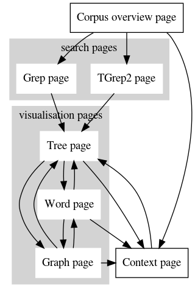
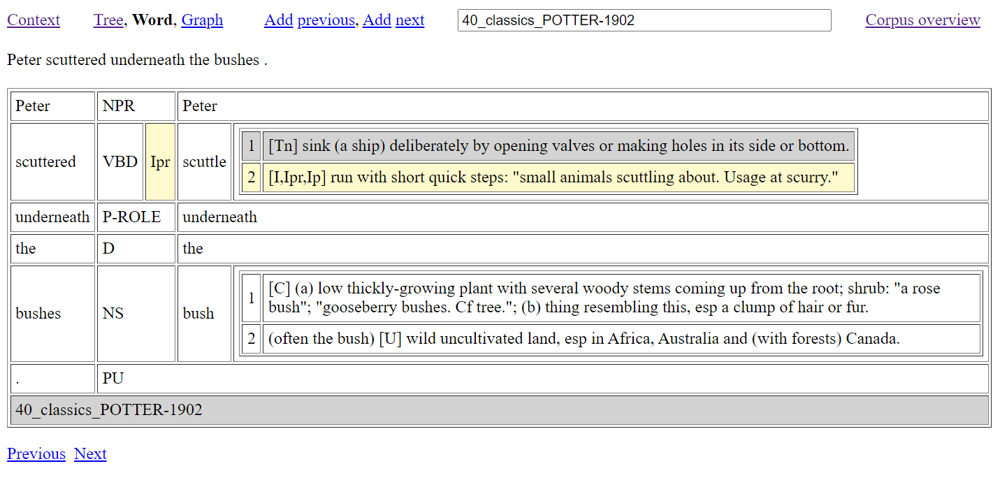
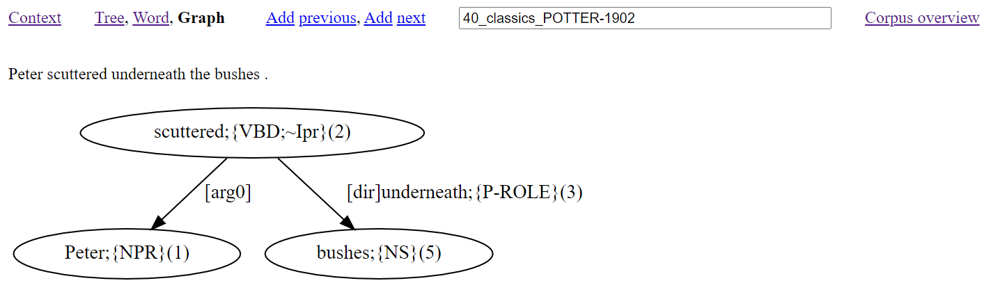

A new corpus interface was launched at the end of 2021, and this is now the principal search interface for the online corpus. This interface can be accessed here.
This documentation introduces the TSPC search interface. This interface aims to give quick and simple access to the content of the Treebank Semantics Parsed Corpus (TSPC), a corpus of English with hand worked tree analysis for approaching half-a-million words. The interface is useful for:
The interface gives direct access to the most up-to-date working files of the TSPC database. Note that stable release versions of the TSPC are periodically made (roughly every six months) and can be accessed as release downloads.
The corpus overview page is the default entry point to the interface and is also reached by clicking the ‘Corpus overview’ link of any of the other pages. Other possible navigations through the interface are illustrated in Figure 1. Notably, the search pages and context page are intermediate steps for reaching a tree page. From a tree page, you can toggle between the other visualisation pages, or visit/return to the context page.
Figure 1: Map of the interface
The corpus overview page contains links for reaching the Grep and TGrep2 pages. There is also an ID field box with the functionality described in section 3 below. Finally, there are grouped listings of all the corpus files, with each list item serving as a clickable link to a context page for the corresponding file. If the ID text box field has content, then the listing of files will be restricted to those files with names that contain the given content, ignoring case distinctions. With the corpus consisting of over four hundred files, this provides a useful way to zoom in on file collections, especially as related files have related names. If there is no match for the content of the ID text box, then the overview page is left with no listed files.
The corpus overview page, context page, and visualisation pages all contain an ID text field box. When the corpus overview page is open, the ID box is blank by default. With the context page, the ID box contains the name of the shown file. With a visualisation page, the ID box contains the full ID name of the shown parse analysis.
A full ID name for a given instance of parse analysis takes the form of a number followed by an underscore character (‘_’) and then the name of the file that contains the parse analysis.
You are free to edit the content of the ID box, and then by pressing the [ENTER] key, you will jump to the corresponding page for the edited ID information. Note:
To understand the functionality of the interface, particularly the options for search, it is helpful to know about the underlying data format used by the TSPC. Each corpus file is a text file containing instances of parse analysis separated by blank lines. Each analysis instance begins with a line that presents the overall word yield for the analysis. This yield is presented between opening and closing brackets with the form: ‘=N(" ’ and ‘ ")’. Following this opening line comes the parse analysis itself, with each word of the analysis placed at the end of its own line and accompanied by lemma information between curly braces with an initial semi-colon (‘;{’, ‘}’). Furthermore, each analysis line presents the path information from the root layer of the parse through to the word layer. The last line of a parse analysis instance is the ID node for the instance.
As examples, (1) shows the two opening instances of parse analysis from the file classics_POTTER-1902.txt:
Note that some nodes in (1) have extra markings: "CONJP;@3", "CONJP;@5", and "CONJP;@7" of 2_classics_POTTER-1902. When distinct nodes have the same tag and the same preceeding path, having the extra marking ensures nodes are uniquely distinguished when considering multiple paths. The convention followed for extra marking includes ‘;@n’ for the n-th sister node of a shared preceeding path.
To support TGrep2 search, the TSPC native format of (1) is converted into bracketed trees with a TOP node, as in (2).
Note that ‘;@n’ markings of nodes are removed, since nodes appear only once within the bracketed structure and so are always distinct.
The context page gives a link for reaching the corpus overview page, followed by an ID field box that will contain the name of the file that is being shown. This ID field box has the functionality already described in section 3. The remainder of the page consists of a table with two columns. The first column provides numbers for file content that has been given parse analysis. Each number forms a link for opening the instance of parse analysis in a tree page. The second column contains the yield content for the referenced analysis, extracted as the line content from the source data between ‘=N(" ’ and its closing ‘ ")’, which is typically the content of a single sentence.
The interface provides two different methods for searching the corpus: the Grep page (section 6.1); and the TGrep2 page (section 6.2).
The Grep page gives a link for returning to the corpus overview page, and a text field box for entering a grep search pattern. A search is made after a search pattern is entered into the text field box and the [ENTER] key is pressed.
Search is made using the grep command (Magloire et al. 2021) under a recursive call (grep -nr) in a directory that contains the corpus data in the native corpus format described in section 4, and illustrated with (1). Aside from making changes to the search pattern, there is no other way to restrict the searched data.
To find words that have the lemma SMILE, use the search pattern (3).
To find noun words that have the lemma SMILE, use the search pattern (4).
To find verb words that have the lemma SMILE, use the search pattern (5).
Note that the double quotes character (") cannot be used in grep search patterns made with the interface. In the patterns of (4) and (5), mention of double quote characters is avoided with use of the dot (‘.’) character, which matches any single character.
In addition to searching for word lemmas, the Grep search page is particularly useful for searching through the yield lines of the annotation. Any search that involves a space character will automatically be restricted to finding its matches from yield lines.
After making a search, a count of the number of matched results is given at the top of a returned results page. This is followed by a display of the results in a tabled format with two columns. The first column consists of possibly coloured cells that contain the full content of a matched line from the corpus data, and the second column contains information about the line number followed by an underscore character (‘_’) and then the file name for the reported content. This line number and file name serve as a link to a tree page for the overall linked instance of parse analysis, with the terminal node for line content highlighted in the resulting tree of the reached tree page.
The colouring of cells in the first column depends on the cell content as follows:
The colouring of cells is a notable aid for being able to easily pick up on differences in the annotation, especially as a search can bring together lines from throughout the corpus.
Up to 2500 consecutive search results are returned following corpus order, that is, with matches taken from files following an alphanumeric sort of the corpus filenames. That returned results are consecutive is important because this allows for the potential of contextual information being seen across returned lines. Quite where in the corpus order the consecutive search results come from is established through a random selection. If there are more than 2500 results, you can see a different batch of 2500 results by re-running the search.
When there are less than 100 search results, a link is provided at the bottom of the page for opening in a tree page a display of all the returned results as trees.
The TGrep2 page gives a link for returning to the corpus overview page, and a text field box for entering a TGrep2 search pattern. A search is made after a search pattern is entered into the text field box and the [ENTER] key is pressed.
Search is made using the tgrep2 command (Rohde 2005) over all the corpus data in a binary database built from data that was first converted into the bracketed format described in section 4, and illustrated with (2). Aside from making changes to the search pattern, there is no other way to restrict the searched data.
TGrep2 search patterns consist of expressions to match nodes and relationships defining links or negated links to other nodes. Nodes of searched trees are matched either with simple character strings, or OR'd character strings, or extended regular expressions. A complex node expression consists of a node expression (the master node) which is followed by relationships. Also, nodes can be assigned labels and may be referred to elsewhere in the pattern by those labels. For a full explanation of this query languages, click the Guide link.
As an example, consider pattern (6) which finds free relatives.
The tree relation ‘<:’ of (6) states that a matched IP-REL node is the only daughter of a matched NP node. The NP node is the master node found by the overall pattern. Brackets ensure that other conditions of the pattern concern the need for the matched IP-REL node to contain a relative word (that is, a word tagged as either RPRO, RD, or RADV) without there being a distinct intervening IP layer.
If the search text box is blank, then there are tables listing the full tag set used in the corpus. A search is made after a search pattern is entered into the text field box and the [ENTER] key is pressed.
In addition to the text field box, the TGrep2 page gives a link for returning to the corpus overview page, and a pull-down-selector for choosing between two methods for displaying results:
After a query is made, at the top of the page, the search reports the number of hits found, and the number of texts that contain hits. There will also be a button at the top of the page for downloading the search results. With a download, results are listed in corpus order, so a re-run of a download will give you the same download (assuming the corpus hasn't changed inbetween).
Returned search results are given as a tree yield, that is, an extraction of the terminal nodes of the tree. Content corresponding to what is matched by the master node of the query is highlighted.
Each returned entry is given a hit number. The hit number doubles as a link to the tree view page for the given tree yield.
Results are displayed as trees, with content that matches the master node of the search pattern highlighted. The ID node of a shown tree works as a link for accessing the same tree in a Tree view page. Up to fifty trees are shown in corpus order. If there are more than fifty results, you can see different trees by re-running the search.
If you download all results by clicking the ‘Download all results’ button, you will see as many trees returned as there are results of hits reported. It is possible for a results download to contain multiple instances of the same tree, with each match of the search expression leading to a return of one instance of a full tree found by a particular match of the search pattern. There is no indication in the download as to how the returned trees were matched.
By contrast, the displays of tree yields or graphical trees include highlighting to indicate nodes that match the search expression as the master node, with the possibility of seeing multiple matches per tree. This behaviour was chosen for the display of results because the highlighting is overlaid as a secondary operation; it is not generated by the actual TGrep2 search. For this reason, matched trees with highlighting are shown in the display only once.
Because what is searched has to first be compiled from the source data, if the source data of the corpus is being altered, then it is possible for the compiled data to fall behind the state of the source data. There is then a chance that this might lead to a mismatch between what is seen from the search and what is subsequently seen from following the tree page links of the search, since all other parts of the interface work by directly accessing the (possibly changing) source data in the native format illustrated above with (1).
Also note that it is possible for the same master node to be picked up by the same search pattern in different ways and so this will lead to a case of not seeing as many nodes highlighted as are reported to have been found by the search. Such an outcome indicates that the pattern is not a good one for statistics, since the same match is being counted in multiple ways.
The interface provides three different modes for visualising consequences of parse analysis: the tree page (section 7.1); the word page (section 7.2); and the graph page (section 7.3). These pages all have an ID text field box that will contain the full name(s) for the analysis being shown. The content of the ID box can be edited, as described in section 3.
At the top of each page, in addition to the ID box, there is also:
The tree page shows a tree visualisation of an instance of parse analysis. If multiple parse analysis IDs appear in the ID text field box, then a tree for each ID is shown. In the case of multiple trees being shown, each tree is preceeded by an ID heading that works as a link for opening the same tree in a new tree view page. Nodes of a tree can be clicked and will take you to a Grep search for the node element.
Figure 2 illustrates the tree page with parse analysis for (7).
This analysis demonstrates some key aspects of the annotation scheme:
The word page shows the word analysis of an instance of parse analysis. If multiple parse analysis IDs appear in the ID text field box, then word analysis for each ID is shown. Figure 3 illustrates the word page with word analysis for (7).
As Figure 3 shows, word analysis is presented in a tabled format with three main columns for words. The first column is for a word as it occurs in the source sentence(s). The second column presents the word class of the word from the first column. If the word is a verb associated with a grammar pattern, then this pattern information is also presented and highlighted with yellow. The third column presents information about the word of the first column with minimally a word lemma. If the word is a lexical word then it is also given sense definitions from a dictionary database. Moreover, if the word is a verb then the grammar pattern information is used to highlight with yellow compatible sense definitions, and leave other sense definitions shaded grey. Sense definitions with grammar codes are sourced from Cowie (1989). If the word is a verb without a grammar pattern, then all the cells containing sense numbers for the associated sense definitions are coloured red.
The graph page shows a graph visualisation of an instance of parse analysis produced by the Treebank Semantics evaluation system (Butler 2021). If multiple parse analysis IDs appear in the ID text field box, then a single graph is calculated from all the parse analysis of the given IDs. Figure 3 illustrates the graph page with graph analysis for (7).
In a graph, word content for source sentences is found outside of square brackets (‘[’, ‘]’) and is always accompanied by (i) content between curly braces (‘{’, ‘}’) to say the word class (and, when appropriate, grammar code) of the word, and (ii) numbering inside round brackets (‘(’, ‘)’) to say the word position within the source sentence(s).
There is at least one number inside round brackets per word, but there may be a second number separated by an underscore character (‘_’). The second number (if present) says which source sentence the word belongs to. The first number says the position of the word within its source sentence. If there is no second number, then the graph has only one source sentence.
Square bracket content tells us about how words function, e.g., [ARG0]=logical subject, [DIR]=direction role.
Word content and/or square bracket content can provide the content for a graph node. Word content and/or square bracket content can also provide the label for a directed arrow that connects graph nodes. An arrow connects content from one node — the master node (often a predicate word) to another node — the dependent node. It is most typical for square bracket content to be part of the label for a directed arrow.
Most words from source sentences have a presence within the corresponding graph, however some words make a contribution that has to be seen in terms of consequences for graph nodes and their dependencies. Missing words include words that are used to make reference to what is talked about, with node presence capturing the reference contribution. These words can be either:
Note that unbound pronouns do have graph presence.
Other words with no graph presence are:
It is also possible for word content to involve the ‘#’ symbol. This marks a word absence due to phrase head or verb elision in the source sentence. For example, consider (8).
Figure 5 shows the graph that is generated by the interface from a parse of (8).
Figure 5: An example with elision

The graph of Figure 5 has two verbs connected by [conj1] and [conj2] arrows from and(11) occuring topmost in the graph. While the verb of the first conjunct is overtly realised with lost(2), the content for the verb of the second conjunct is shown as #(12) to indicate the licensed absence of a verb (a lost lost!). One further instance of ‘#’ occurs in the graph (namely, #(4)) to indicate a nominal head absence that has [num] (numeral modifier) and ‘of’ (role preposition) links.
Butler, Alastair. 2021. Meaning representations from treebanks. The Treebank Semantics Web Site. Available at: http://www.compling.jp/ajb129/ts.html.
Cowie, A P. 1989. Oxford Advanced Learner's Dictionary, Fourth Edition. Oxford: Oxford University Press.
Magloire, Alain et al. 2021. GNU Grep: Print lines that match patterns, version 3.7. Free Software Foundation.
Rohde, Douglas. 2005. TGrep2 User Manual version 1.15. Available at: https://github.com/andreasvc/tgrep2.